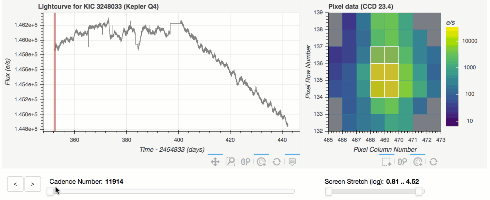

Kepler data analyses often begin with establishing which pixels your target of interest occupied, and to what extent artifacts or background signals affect those pixels. The Kepler/K2 in-house toolkit, Lightkurve, offers a new mechanism to witness — in real time — the differential impact of aperture mask pixel selection on the delivered lightcurve.
The new tool extends the functionality of the existing .interact() tool first introduced in May.
What's new is the ability to click on individual pixels in the target pixel file window.
The lightcurve on the lefthand side of the plot instantaneously re-renders a lightcurve by adding the flux across all the demarcated pixels.
A user may hold shift and mouse-click to select many pixels in sequence, or may click and drag a box to select a box of pixels. Pixels may be de-selected by clicking a pixel while holding shift.
The animation below demonstrates how this tool may be used to identify the background Eclipsing Binary near the false positive planet candidate KOI 6.01.

The seemingly mundane choice of aperture photometry pixels embodies a deep phenomenon in statistics, the so-called bias-variance tradeoff. On one hand, we desire to collect all of a target's photons with a large aperture: more signal is good. On the other hand, we wish to limit the penalty of adding detector read noise and background signals: more noise is bad. The balance is struck by selecting a problem-specific optimal aperture mask. The Kepler Pipeline provides a mask optimized for finding planets in the near-motion-free Kepler prime data. It is this ostensibly optimal mask that appears in .interact() by default.
The choice of mask became even more problem-specific in the K2 mission, with its heightened spacecraft-induced image motion. Apertures that were considered optimal in the Kepler prime mission often underperform in K2. The interact tool can profoundly help K2 users diagnose and mitigate instrumental artifacts.
Usage
The .interact() tool can be called from a Jupyter notebook as follows:
from lightkurve import KeplerTargetPixelFile
tpf = KeplerTargetPixelFile.from_archive(target="Trappist-1")
tpf.interact()
You will need to upgrade your installation of lightkurve to the latest version (v1.0b17) for this to work. This can be done via the command line as follows:
$ pip install lightkurve --upgrade
Please consult the Lightkurve documentation for more information. The documentation includes a tutorial on the interact() tool.